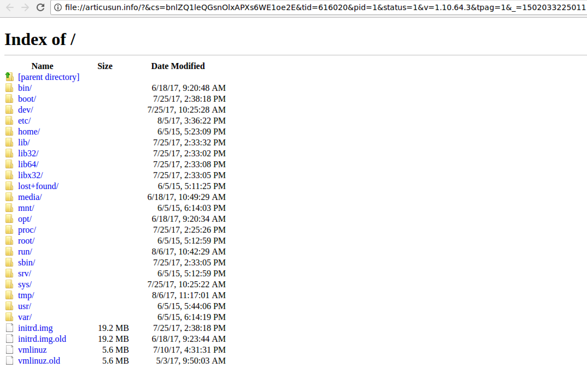
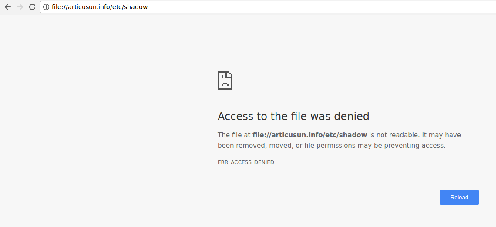

This is a sequel to my last blog post about the popunder script pop.js. This blog post will be about another script I found loaded by 4archive[.]org, 616020.js. I call it 616020.js, but that is not an official name - I just copy pasted the last value from the URL that returns it, https://d1qtf1avwa1wvl[.]cloudfront[.]net/?aftqd=616020 (square brackets are mine to prevent clicking). The aftqd portion of that link seems to be dynamic.
I'll mention again that I am using Chromium 59 in a Remnux virtual machine to gather these samples. I'm using the responsive design feature, set to iPhone 6 to emulate the Mobile Safari user agent. To do this in FireFox, you need to manually copy paste the user agent into the custom user agent field. It's interesting to note that despite checking out these sites with no adblocker, I haven't actually triggered a real popunder window. I've had redirects and new tabs, but no new windows under the main browser window.
This script is loaded in line 55 of the board indexes.
<!-- PopAds.net Popunder Code for 4archive.org | 2017-08-06,1006003,0,0 -->
<script type="text/javascript" data-cfasync="false">
/*<![CDATA[/* */
/* Privet darkv. Each domain is 2h fox dead */
(function(){ var t=window;t["\u005fp\u006f\u0070"]=[["s\u0069\u0074e\u0049\u0064",1006003],["\x6d\x69\u006e\x42i\x64",0],["\x70\u006f\u0070\x75nd\x65\u0072\u0073\x50\x65r\x49\x50",0],["\x64\u0065\u006cay\u0042e\x74\u0077ee\u006e",0],["de\u0066\u0061\u0075lt",false],["\x64\u0065\u0066\x61\u0075\u006c\x74Pe\u0072\x44a\x79",0],["t\u006fp\x6dos\u0074\u004c\u0061\u0079\u0065r",!1]];var j=["/\x2f\x63\u0031.\x70\u006f\x70a\u0064\u0073\x2e\x6e\u0065\x74/\x70\u006fp\x2e\x6a\u0073","/\x2f\x63\u0032\u002e\u0070o\u0070ad\x73.\x6e\u0065\u0074\x2f\x70\u006f\x70\u002ej\x73","\x2f/w\u0077\x77\x2e\x6c\u006a\u0066\u0065\u0074l\x68\u006c\x65\x69\u0066\x66r\x2ebid/y\u002e\u006a\x73","//\x77\u0077\u0077\u002el\u0074\u006e\u006a\x74p\u0068\u0062\u0062v\u0069\x67\x69\x2eb\u0069\x64/\u006egl\x2e\x6a\u0073",""],g=0,h,b=function(){if(""==j[g])return;h=t["docu\u006dent"]["\u0063re\u0061t\x65\x45\x6ceme\x6e\u0074"]("\x73\u0063r\x69\u0070\x74");h["\u0074y\u0070\x65"]="\u0074e\x78\x74\u002f\x6aava\u0073\u0063r\x69\x70t";h["a\x73\x79\u006e\u0063"]=!0;var z=t["\x64\x6fc\x75\x6d\x65nt"]["\x67e\u0074\x45\x6c\u0065\u006d\u0065\x6e\u0074s\x42\x79\x54\x61g\u004ea\u006d\u0065"]("\x73c\x72\x69\x70\u0074")[0];h["s\u0072\x63"]=j[g];if(g<2){h["\x63\x72o\u0073\u0073\x4f\x72\x69\u0067\x69n"]="\x61\x6eon\x79\u006d\u006f\x75\x73";};h["\u006f\x6ee\u0072\x72\u006f\u0072"]=function(){g++;b()};z["\u0070\x61\u0072\u0065\x6etNo\u0064\x65"]["\u0069\u006e\x73\x65rt\u0042\x65\u0066\x6fr\u0065"](h,z)};b()})();
/*]]>/* */
</script>
<script type='text/javascript' src='//pl3864833.puserving.com/c6/b4/63/c6b46389dcb5c1fb834199a445044440.js'></script><!-- adsterra nsfw -->
<script data-cfasync="false" src="//d1mub3aw743hsf.cloudfront.net/?abumd=616020"></script><!-- admaven sfw -->
As you can see, I didn't think to save the entire web page I was looking at the first time I went through it (I thought I would be able to save a PCAP from the Chromium network log, but apparently not). And this link has new values abumd instead of aftqd and d1mub3aw743hsf instead of d1qtf1avwa1wvl which is my initial sample, but I figure they are the same code probably.
The HTML comment also helpfully points out that this script comes from Admaven. They don't seem to have a demo on their site, unlike pop.js. This would be helpful to do dynamic analysis of the script as LiveOverflow did in his video on pop.js.
I actually checked out this script before pop.js in my initial review of the scripts loaded by 4archive, but I looked at the PDF it had encoded, saw it was just making a single alert, and discounted it from there. This was a mistake.
After giving the script source another scroll-through, I found this interesting bit of code:
if (!h.f() && (m || r || h.b() || h.C())) {
// Create and focus flash element
var I = "admvpu",
fa = function() {
function a(c) {
b.appendChild(Kb(l.createElement("param"), c))
}
var b = Kb(l.createElement("object"), {
type: "application/x-shockwave-flash",
id: I, // "admvpu"
name: I, // "admvpu"
data: "//s3-us-west-2.amazonaws.com/amcdn/admvpopunder.swf"
});
a({
name: "wmode",
value: "transparent"
});
a({
name: "menu",
value: "false"
});
a({
name: "allowscriptaccess",
value: "always"
});
a({
name: "allowfullscreen",
value: "true"
});
a({
name: "autoplay",
value: "true"
});
// "position:fixed !important;visibility:visible !important;left:0 !important;top:0 !important;width:" window.screen.availWidth + "px !important;height:" + window.screen.availHeight + "px !important;z-index:2147483647 !important;overflow:hidden !important;"
b.setAttribute("style", z.na(window.screen.availWidth, window.screen.availHeight));
p.W(function() {
f.document.body.appendChild(b);
b.focus()
})
},
...
This bit of code creates a flash element, and sizes it so it fills the entire screen. Below is admvpopunder.swf after being run through ShowMyCode.com.
package {
import flash.events.*;
import flash.display.*;
import flash.external.*;
public class admvpopunder extends MovieClip {
var o:Boolean;
public function admvpopunder(){
this.o = ExternalInterface.call("window.admvpuLoaded");
stage.addEventListener(MouseEvent.MOUSE_UP, this.mouseupFn);
stage.scaleMode = StageScaleMode.EXACT_FIT;
}
protected function mouseupFn(_arg1:MouseEvent):void{
if (!this.o){
stage.displayState = StageDisplayState.FULL_SCREEN;
};
ExternalInterface.call("window.admvpu");
if (this.o){
stage.displayState = StageDisplayState.FULL_SCREEN;
};
stage.displayState = StageDisplayState.NORMAL;
}
}
}//package
This ActionScript code switches the Flash application from StageDisplayState.NORMAL to StageDisplayState.FULL_SCREEN, and then back to StageDisplayState.NORMAL. I believe this to be the focusing mechanism, similar to the PDF alert. Dynamic analysis will be needed to verify this functionality.
I tried embedding this Flash object into a blank HTML file to see what would happen, but Chromium doesn't actually have Flash installed. What I think happens if the victim has Flash installed is that the object goes fullscreen, Chrome/FireFox spawns an alert either requesting permission to go fullscreen, or notifying the user that the page has went fullscreen, and this alert brings focus back to the main window, and away from the popunder.
Also important to note is that the filename admvpopunder.swf confirms the HTML comment which says that this is from Admaven. Notice: admv <-> admaven.
While we're at it, lets talk about the PDF which is embedded defined here:
K.prototype.bb = function() {
return ""
};After dumping the contents using pdfextract, we see it has a single script, with a single line of code:
app.alert("Focusing, please wait....");
This has the same effect as the PDF script in pop.js and is likely used for the same purpose.
This data is used in the function K.prototype.g here:
K.prototype.g = function(a, b, c, d) {
function e() {
clearTimeout(g);
h.setAttribute("data", "data:application/pdf;base64,JVBERi0xLj");
x(function() {
f.document.body.removeChild(ba)
}, 20);
a.resizeTo(k[1], k[0]);
a.moveTo(k[2], k[3]);
a.location.href = q;
p.J("focus", e, !0, f);
F(r, m)
}
var r = this,
m = arguments,
g, k = this.ea(),
q = this.ca;
this.Da(a);
p.h("focus", e, !0, f);
var ba = l.createElement("div");
ba.setAttribute("style", "visibility:hidden;width:0px;height:0px;opacity:0;position:absolute;top:100%;left:0;pointer-events:none;overflow:hidden;");
var h = l.createElement("object");
h.id = "padmvpu_ppdf";
h.setAttribute("data", this.bb());
ba.appendChild(h);
f.document.body.appendChild(ba);
g = x(e, n ? 2E3 : 3E3)
};A little further along in the code, we see another reference to PDFs.
X.prototype.bb = function() {
return "//s3-us-west-2.amazonaws.com/amcdn/pu.pdf"
};
If we diff pu.pdf and the base64 encoded pdf embedded in K.prototype.bb, which I've named 616020.pdf, we see they are the same file. I'm not sure why they would include an external source for this file when it's already embedded in the script.
Let's take a look at the metadata of this file, and compare it to the metadata of the PDF in pop.js.
In pu.pdf stream_3.dmp:
<?xpacket begin="" id="W5M0MpCehiHzreSzNTczkc9d"?>
<x:xmpmeta xmlns:x="adobe:ns:meta/" x:xmptk="Adobe XMP Core 5.6-c015 84.158975, 2016/02/13-02:40:29 ">
<rdf:RDF xmlns:rdf="http://www.w3.org/1999/02/22-rdf-syntax-ns#">
<rdf:Description rdf:about=""
xmlns:xmp="http://ns.adobe.com/xap/1.0/"
xmlns:dc="http://purl.org/dc/elements/1.1/"
xmlns:xmpMM="http://ns.adobe.com/xap/1.0/mm/"
xmlns:pdf="http://ns.adobe.com/pdf/1.3/">
<xmp:ModifyDate>2016-06-16T11:03:59-07:00</xmp:ModifyDate>
<xmp:CreateDate>2016-05-26T13:54:38-07:00</xmp:CreateDate>
<xmp:MetadataDate>2016-06-16T11:03:59-07:00</xmp:MetadataDate>
<xmp:CreatorTool>Adobe Acrobat Pro DC 15.16.20039</xmp:CreatorTool>
<dc:format>application/pdf</dc:format>
<xmpMM:DocumentID>uuid:9926a698-f6c3-46c9-b231-af41a0200e12</xmpMM:DocumentID>
<xmpMM:InstanceID>uuid:f9cfdbed-d141-4fb4-ac0b-f89f1cfb954e</xmpMM:InstanceID>
<pdf:Producer>Adobe Acrobat Pro DC 15.16.20039</pdf:Producer>
</rdf:Description>
</rdf:RDF>
</x:xmpmeta>
...
<?xpacket end="w"?>
We see that this file was created using Adobe Acrobat Pro DC 15.16.20039 on 2016-05-26T13:54:38-07:00 and was last modified 2016-06-16T11:03:59-07:00. Lets compare that to the PDF embedded in pop.js, which I've named pop.pdf. pop.pdf doesn't extract as cleanly, and doesn't seem to have the XML metadata stream as pu.pdf has.
5 0 obj
<<
/CreationDate (D:20160723230313+07'00')
/Producer (popunderjs.com)
/ModDate (D:20160724061825+02'00')
>>
endobj
What we do have from pop.pdf is the creation date and the time it was last modified. It was created about two months after pu.pdf. There's something to be said about the timezones, but I'm not an expert.
Scrolling through 616020.js some more, we see this function, which creates an iframe with a single script, which requests notifications permission. If the script is loaded from an https site, it will instead request geolocation permissions. My guess is that it always used geolocation permission, until Chrome/FireFox began disallowing geolocation information from insecure sites - at which point the script devs added a fallback to notification permissions.
da.prototype.g = function(a, b, c, d) {
var e = this,
n = !1,
r = arguments,
m = this.ea();
this.Da(a);
// This is one of the techniques LiveOverflow found in his analysis
var g = l.createElement("iframe");
g.style.display = "none";
g.srcdoc = "https:" === location.protocol ? "<script>navigator.geolocation.getCurrentPosition(function(){});\x3c/script>" : "<script>Notification.requestPermission(function(){});\x3c/script>";
var ba = f.setInterval(function() {
try {
!n && p.Za() && (n = !0, l.body.appendChild(g), x(function() {
try {
g.parentNode.removeChild(g), a.resizeTo(m[1], m[0]), a.moveTo(m[2], m[3]), a.location.href = b, clearInterval(ba), F(e, r)
} catch (c) {
q(k.l, "ppu 58 timeout: " + c)
}
}, 150))
} catch (c) {
q(k.l, "ppu 58 interval: " + c)
}
}, 10)
};
At this point, I'm just looking around the code for stuff. It's time to do some dynamic analysi. I created a blank HTML document, and loaded my deobfuscated script in the <head>. Check out the Chromium network log!
And if you visit any of those links (excluding the one that failed to load):
Unfortunately, there's not a whole lot of fun to be had here.
WAIT WHAT WTFWTFWTFWTF THATS MY FILESYSTEM

So after that huge WTF moment, I realized that because I'm loading the script from an HTML file on my system, and not a webserver, Chromium is going to try to load resources from my filesystem as well.
The actual response from articusun.info/?&cs=bnlZQ1leQGsnOlxAPXs6WE1oe2E&tid=616020&pid=1&status=1&v=1.10.64.3&tpag=1&_=1502033225011 is R0lGODlhAQABAID/AP///wAAACwAAAAAAQABAAACAkQBADs=. I'm guessing this is some kind of beacon or something. I'm not too interested at this point. Base64 decoding that response, it ends up being a tiny GIF.
The only other major action 616020.js takes is creating an <a> element which covers the entire body of the page.
Following this link leads to a seemingly innocent site who I am guessing bought the redirect advertisement.
Let's take a look at that network request that failed.
http://d1852uckuj7o1j.cloudfront.net/4bTdQS2cOWD4tWBleNHZRXAFgeVdLXSMkCR0KPgIBAkJiGlYEdikhHRhjdj8dCQp9f0EBVj4sWktSPihaXBElKloAWCoiCwFWdXkhWBlgblVdHzk7DwJZNW5ULxJiewQdQnV5VwRHOCQJCBJiewgeEmJ7XjIGdXlXAV47LkJfBz0qBEgFYCQUSAVgM05IBW-AqFx1bNTwCD1w5P0JfcWZ7VkMGfn9RSAVgYwwFQz0nQl90dXlXAV47LkJfBzcuBAZYeW5VXUE1ORQEWD5uVSsOfntCXwc9JAUEWzVuVSsGYylWWQR1eVceVjYqFQQSYg1RXQZ+ekEYCg
The response fails because Chromium tries to get it with the file:// protocol. Copy-pasting it into a new tab with the http:// protocol, we get the response:
nIfou2Q1iAyjzuT("eHYIrTaErdaIqTw7rdsEvctJgeDPhMVGC6nKg70JsSE8vdwIrcEHqTaEvct7Ae49hftGgeFHvMVKhM1SvdaIe89IrcFBfiFBfiFMgeFHhiFMgeFHhiF2XiEEvcsSvctTB74HAfhVBNkKg70JsSESsSFBfiFMgeFHhiEEvcsLv7nFrfCFqds8qHUEreF6vMqIB6lUhNtLBNnKBMl9sSE7qcEEvxJDvdaIriEGvcsSvxJDvct9CMlJhe8ShfsKAe4MBGsIsTr9pjwEpjUHqjaSvxJDvdaIrcESsSEEvdbD")
This is a Javascript function call, which I'm guessing is evaluated. Ctrl-F'ing 616020.js for nIfou2Q1iAyjzuT doesn't return anything. What I think must happen is that a function name must be randomly contructed and is assigned a value.
We can use the Chromium Javascript console to check out this function, and then call it when we're ready.
> nIfou2Q1iAyjzuT
function (a) {
try {
ib(fb), Ma(La(a))
} catch (b) {
q(k.l, "gparam error: " + b)
}
}
We can find this corresponding function in 616020.js below, giving credibility to my hypothesis.
f[a] = function(a) {
try {
ib(fb), Ma(La(a))
} catch (b) {
q(k.l, "gparam error: " + b)
}
};
Calling the function with the argument as given returns undefined, which just means there's no return value. The HTML body hasn't gotten any new elements and there's no new network traffic, but check out the <head>:
<head>
<script src="616020_deob.js"></script>
<link rel="preconnect" href="//vinterrals.info">
<link rel="preconnect" href="//consivenu.com">
<link rel="preconnect" href="//tremember.info">
</head>
There's three new tags in the head, all to URLs I would classify as sketchy. I'm not familiar with <link> elements, but I found this page which explains it, as well as the preconnect attribute. In the end, I'm not sure what this accomplishes.
That's about all I have for now. My attempts at dynamic analysis are somewhat thwarted by the fact that I can't recreate popunders in my browser - when I try the pop.js demo, I get a "tab under" rather than a popunder (it creates a new tab and switches focus to it while redirecting the previous tab). I definitely want to figure out how and when that flash file I discovered comes into play.
My goal is still to figure out how popup ads are bypassing both Brave's iOS adblock and iOS's mailto: popup fix, as I explained in the previous blog post. I need to get a good packet capture from my iPhone in order to analyze this fully when I trigger it.